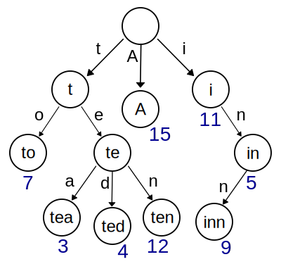

Trees
 ^[File:Tree (computer science).svg. (2019, October 20). Wikimedia Commons, the free media repository. Retrieved 03:13, February 8, 2020 from https://commons.wikimedia.org/w/index.php?title=File:Tree_(computer_science).svg&oldid=371240902.]
^[File:Tree (computer science).svg. (2019, October 20). Wikimedia Commons, the free media repository. Retrieved 03:13, February 8, 2020 from https://commons.wikimedia.org/w/index.php?title=File:Tree_(computer_science).svg&oldid=371240902.]
A tree is a more constrained version of a graph data structure. Specifically, a tree is a graph that can be shown as a hierarchical structure, where each node in the tree is itself the root of a smaller tree. Each node in the tree can have one or more child nodes and exactly one parent node, except for the topmost node or root node, which has no parent nodes.
A tree is very useful for representing data in a hierarchical or sorted format. For example, one common use of a tree data structure is to represent knowledge and decisions that can be made to find particular items. The popular children’s game 20 Questions can be represented as a tree with 20 levels of nodes. Each node represents a particular question that can be asked, and the children of that node represent the possible answers. If the tree only contains yes and no questions, it can still represent up to $2^{20} = 1,408,576$ items!
Trie
Another commonly used tree data structure is the trie, which is a special type of tree used to represent textual data. Ever wonder how a computer can store an entire dictionary and quickly spell-check every single word in the language? It actually uses a trie!
Below is a small example of a trie data structure:
 ^[File:Trie example.svg. (2014, March 2). Wikimedia Commons, the free media repository. Retrieved 03:22, February 8, 2020 from https://commons.wikimedia.org/w/index.php?title=File:Trie_example.svg&oldid=117843653.]
This trie contains the words “to”, “tea”, “ted”, “ten”, “i”, “in”, “inn” and “A” in just a few nodes and edges. Imagine creating a trie that could store the entire English language! While it might be large, we can hopefully see how it would be much more efficient to search and store that data in a trie instead of a linear data structure.
When to Use a Tree
A tree is a great choice for a data structure when there is an inherent hierarchy in our data, such that some nodes or elements are naturally “parents” of other elements. Likewise, if we know that each element may only have one parent but many children, a tree becomes an excellent choice. Trees contain several limitations that graphs do not, but they are also very powerful data structures.